1987 Royal motorcade lettering
The revised serial uses seven smooth observed glyphs, rather than mixing photographic traces with generic letters. R, O, Y, A, L and 1 are compared in both available plates; 8 is observed only in ROYAL 18.
The construction retains a broad flat A top, rounded triangular counter, curved Y join, raised L toe and flagged 1. Local wear and embossed shoulders remain visible in every original crop and are excluded from the smooth master. Remaining digits are consistent constructions, with unconfirmed contours.
Open the plate · BCpl8s source article · Recorded crop dimensions
Every observed letter and number
Each shape overlay matches the original crop's height and center only. Natural master width remains visible. Threshold mask overlap is a rough paint diagnostic; it cannot certify tooling, embossing or shape accuracy.
ROYAL18 · R
Original paint + embossing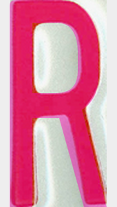
Height/center matched overlay Source box W/H 0.467 · smooth master 0.470. Approximate mask overlap 0.814.
ROYAL18 · O
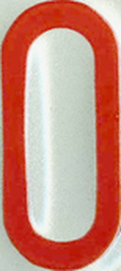
Original paint + embossing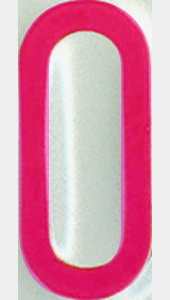
Height/center matched overlaySource box W/H 0.447 · smooth master 0.440. Approximate mask overlap 0.900.
ROYAL18 · Y
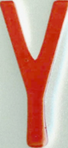
Original paint + embossing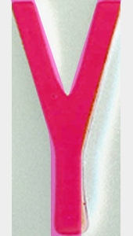
Height/center matched overlaySource box W/H 0.463 · smooth master 0.470. Approximate mask overlap 0.854.
ROYAL18 · A
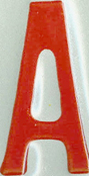
Original paint + embossing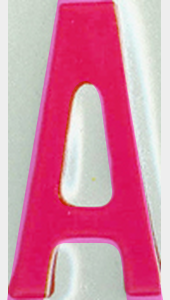
Height/center matched overlaySource box W/H 0.510 · smooth master 0.520. Approximate mask overlap 0.873.
ROYAL18 · L
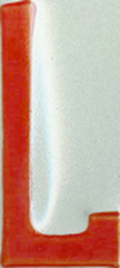
Original paint + embossing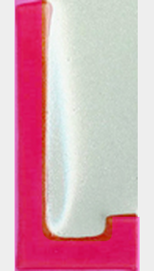
Height/center matched overlaySource box W/H 0.450 · smooth master 0.460. Approximate mask overlap 0.788.
ROYAL18 · 1
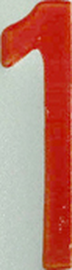
Original paint + embossing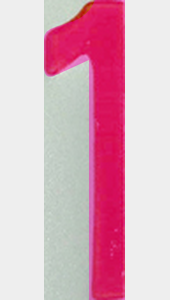
Height/center matched overlaySource box W/H 0.270 · smooth master 0.270. Approximate mask overlap 0.887.
ROYAL18 · 8
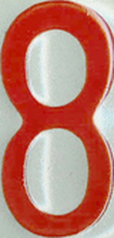
Original paint + embossing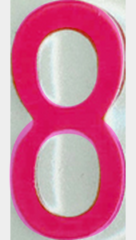
Height/center matched overlaySource box W/H 0.480 · smooth master 0.485. Approximate mask overlap 0.863.
ROYAL1 · R
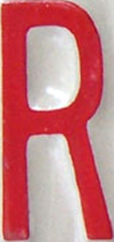
Original paint + embossing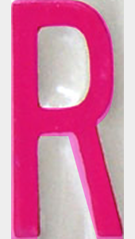
Height/center matched overlaySource box W/H 0.473 · smooth master 0.470. Approximate mask overlap 0.875.
ROYAL1 · O
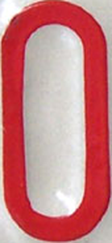
Original paint + embossing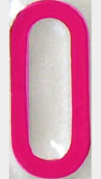
Height/center matched overlaySource box W/H 0.463 · smooth master 0.440. Approximate mask overlap 0.898.
ROYAL1 · Y
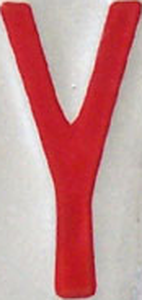
Original paint + embossing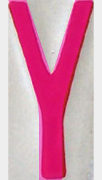
Height/center matched overlaySource box W/H 0.473 · smooth master 0.470. Approximate mask overlap 0.831.
ROYAL1 · A
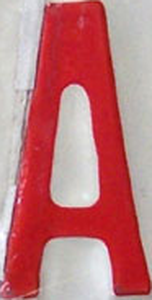
Original paint + embossing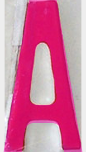
Height/center matched overlaySource box W/H 0.507 · smooth master 0.520. Approximate mask overlap 0.902.
ROYAL1 · L
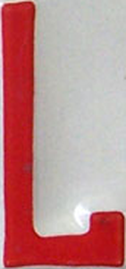
Original paint + embossing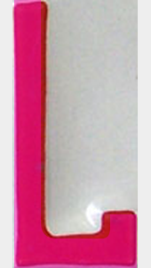
Height/center matched overlaySource box W/H 0.470 · smooth master 0.460. Approximate mask overlap 0.796.
ROYAL1 · 1
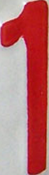
Original paint + embossing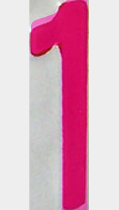
Height/center matched overlaySource box W/H 0.283 · smooth master 0.270. Approximate mask overlap 0.919.
Whole-run proposal: center 153 mm, baseline 109.5 mm, cap height 66.5 mm, tracking 12 cap units. Photographed manufacture, paint spread and plate deformation leave residual differences. Source pixels are photographs, not vector traces.